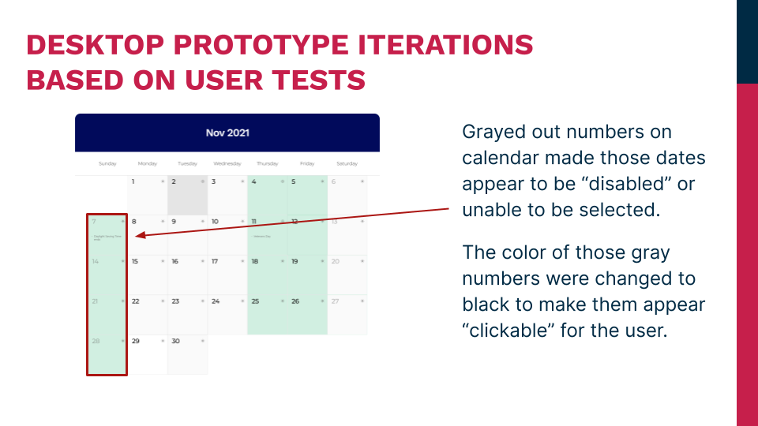
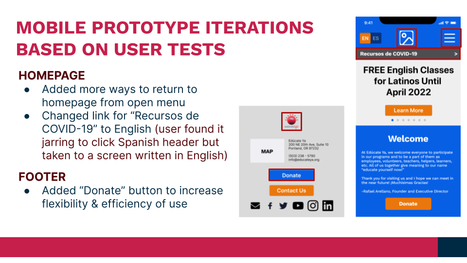

UX Research
Definition
Ideation
Prototyping
Usability Testing
Usability Testing Plan,
User Testing Insights,
Reiterate Prototypes
User testing an easy but valuable way to gather insights on designs that designers often overlook. Sometimes I need to step back and view the designs from another perspective ... or just recruit users to test. For Edúcate Ya’s website redesign, we tested on a dozen willing users.
Here are the highlights.


It is always intriguing to see
what discoveries will be made
during usability testing.